Interpretable ML
Concept
In ML, some models are interpretable (e.g., regression, CART) and some are not (e.g., SVM, NN). So called interpretable machine learning is a set of techniques aiming at
Discover / rank variables or features by their importance on the predicted outcome,
Associate variation of the important features with a direction of the outcome (positive vs negative association).
Variable importance
Variable importance
Variable importance is a method that provides a measure of the importance of each feature for the model prediction. The variables importance for a trained model can be evaluated for one variable by:
In the test set, shuffle the instances on one variable,
Make the predictions of this new test set,
Compute the quality metric (RMSE, Accuracy, ...),
Compare it to the quality metric on the original test set.
If the variable is important, giving to the model an incorrect values of this variable should decrease the quality metric,
This is repeated for each variable.
Illustration
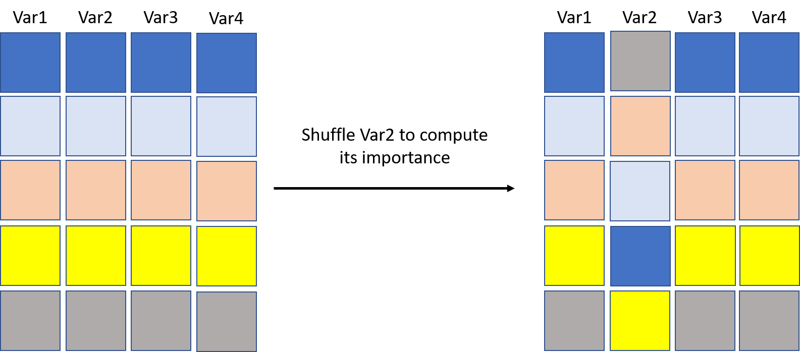
If predictions using the right-hand side data are the same as the left-hand side ones, then Var2 is not important. With the iris data and a CART, trained on \(80\%\) of the data (test set at \(20\%\)). The tree is
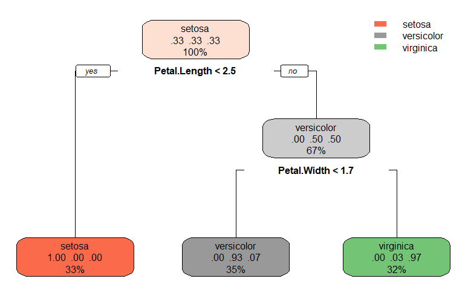
We see directly that Petal length and Petal width are the only two important features (except in case of missing data).
To measure this, in the test set, we shuffle Petal length. The accuracy of the shuffled test set is much lower than the original one (left: original test set; right: modified test set). This confirms that Petal length is essential for a good prediction of the species by the model.
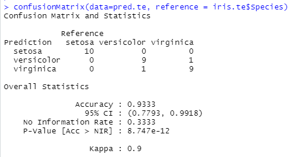
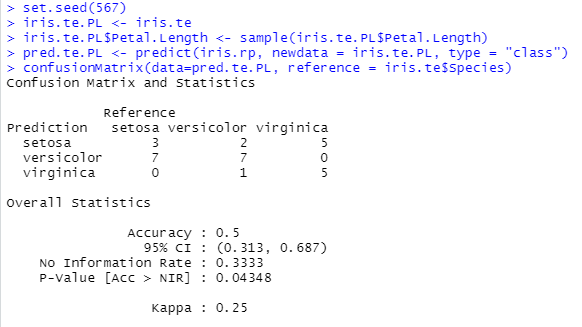
On the other hand, the Sepal length does not appear on the graph. And, indeed, it is not important for the prediction as shown below.
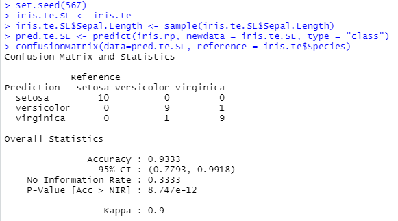
For tree, the importance of a variable can be read to some extend directly on the graph (if it is not too large). For a model like SVM, it is not. But we can still make the same analysis by shuffling the instances for a given feature (top: original; left: Petal length; right: Sepal length).


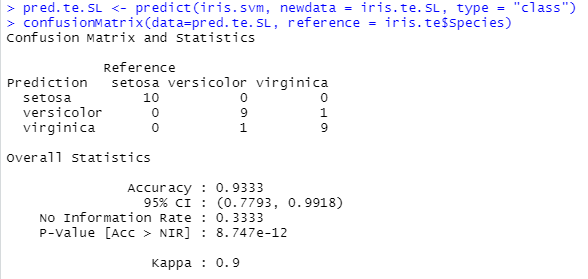
Several versions
The variable importance presented previously is called model-agnostic: it is independent of the model type.
There exist several ways of it:
Modification of the variable: shuffling is one possibility. Perturbation is another (add a random noise). Simulation from another distribution.
Modification of the score: accuracy is one possibility. Specificity/Sensitivity/Bal. accuracy, Entropy... The importance can be linked to the prediction of one level only.
Regression: use RMSE, MAE, etc.
There exist also model-specific approaches that are specific to the model that is used.
In R,
imlallows to compute model-agnostic variable importance, with any loss function.caretallows to compute mainly model-specific variable importance. Also model-agnostic type (limited choice of loss functions).
VI on SVM estimated on cross-entropy, repeated 100 times.
library(iml)
iris.iml <- Predictor$new(iris.svm, data = iris.te[,-5], y = iris.te[,5])
iris.imp <- FeatureImp$new(iris.iml, loss = "ce", n.repetitions = 100)
plot(iris.imp)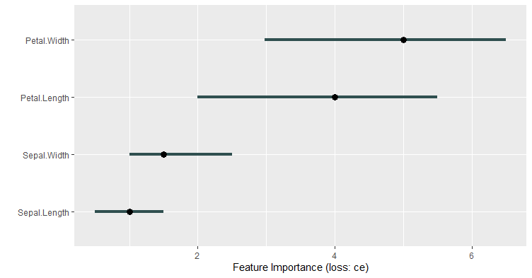
Example: iml
For each feature: The difference in entropy obtained between the original data set and the shuffled data set is computed. This is repeated 100 times. These differences are averaged and shown on the plot.
VI on SVM estimated on AUC.
library(caret)
trctrl <- trainControl(method = "repeatedcv", repeats= 3, number=5)
iris.caret <- caret::train(form=Species ~., data = iris.tr,
method = "svmLinear",
trControl=trctrl)
plot(varImp(iris.caret))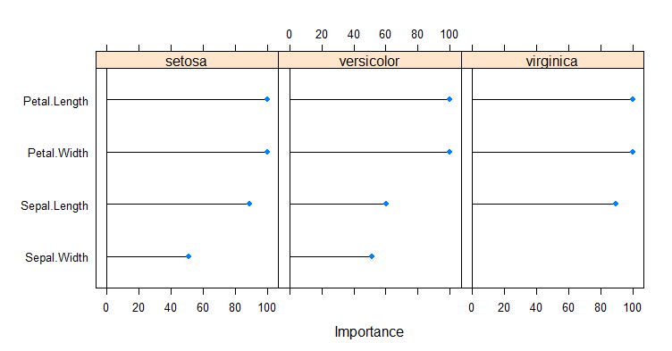
Example: caret and VarImp
Since no specific method was developped for SVM, a filter-based method is implemented. From the help of VarImp:
For classification, [...] the area under the ROC curve [...] is used
as the measure of variable importance. For multi-class outcomes, the problem
is decomposed into all pair-wise problems and the area under the curve is
calculated for each class pair (i.e class 1 vs. class 2, class 2 vs.
class 3 etc.). For a specific class, the maximum area under the
curve across the relevant pair-wise AUC's is used as the variable importance
measure.Even for one model, there may exist lots of implementations. Below, we give one example: VarImp for CART. CART is recognized as Recursive Partitioning (from rpart). From the help of VarImp:
The reduction in the loss function (e.g. mean squared error) attributed
to each variable at each split is tabulated and the sum is returned. At each split, the reduction of loss due to the best split on each variable is extracted.
These loss reductions are summed.
(No resampling or measure of error on the VI estimate)
Model-specific VI
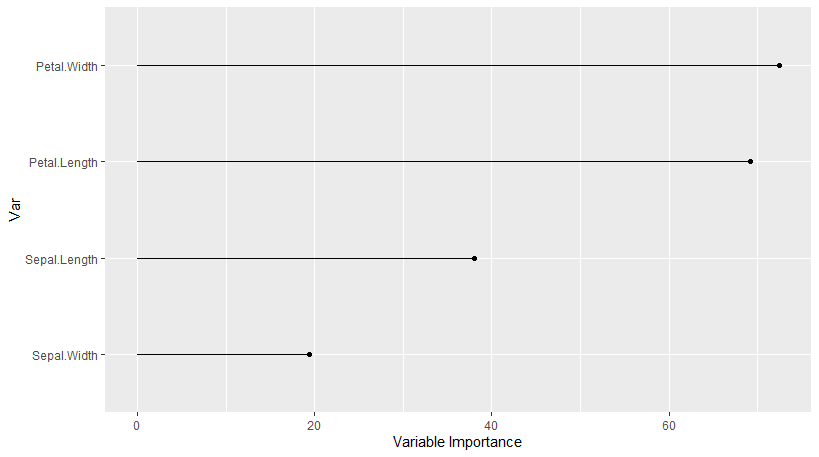
Whatever implementation you use, VI aims at the same objective: quantify the importance of variables for the predictions of the model. Some limitations are:
Instability: the estimation of the importance can be unstable due to the random perturbation. Resampling can help (i.e., repeat the shufling several times).
Interactions: sometimes it is the combination of two features that makes a good prediction (typ. trees). Variable importance cannot see this.
The variable importance is only seen with the eyes of the model. If the model is doing a poor job (e.g., low accuracy) then the variable importance analysis is of low quality.
Partial Dependence Plots
Variable important allows to inspect how much a variable is important in the construction of the prediction by a model.
Partial dependence plots (PDP) show in which direction is the association between a feature \(x\) and the prediction of \(y\).
Partial Dependence Plot
Mathematically, for the feature \(x_s\), let \(f(x_s, x_{-s})\) be the prediction of \(y\) by the model \(f\), then the PD-function of \(X_s\) at \(x_s\) is \[F_{X_s}(x_s) = \int f(x_s, x_{-s}) p(x_{-s}) dx_{-s} = E[f(x_s, X_{-s})],\] where \(p(x_{-s})\) is the distribution of \(x_{-s}\). \(F_{X_s}(x_s)\) is the expected value over \(x_{-s}\) of the prediction when \(x_s\) is fixed (not conditional).
The estimation of the expectation above is obtained by averaging on the training set: \[\hat{F}_{X_s}(x_s) = \frac{1}{N}\sum_{i=1}^N f(x_s, x_{-s}^{(i)}).\]
Estimation
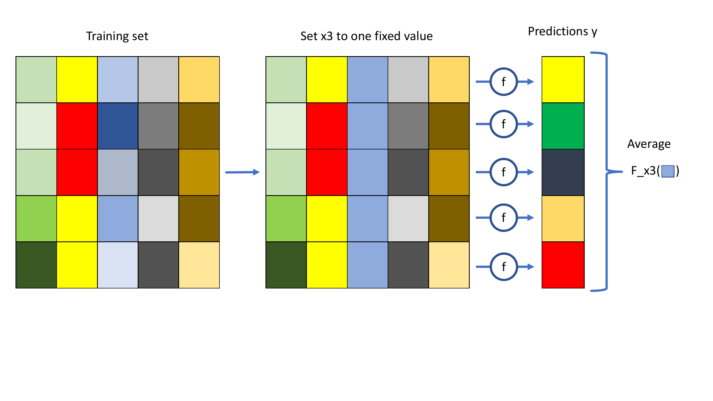
Interpretation
Left: PDP increases. The prediction increases in average when the feature increases ; it is a positive association.
Right: PDP is stable. The prediction does not change in average when the feature value changes; there is no association.
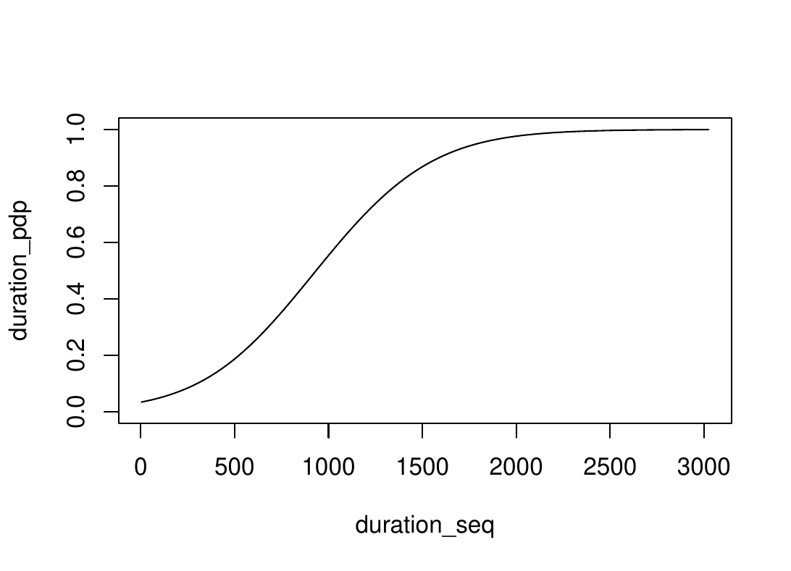
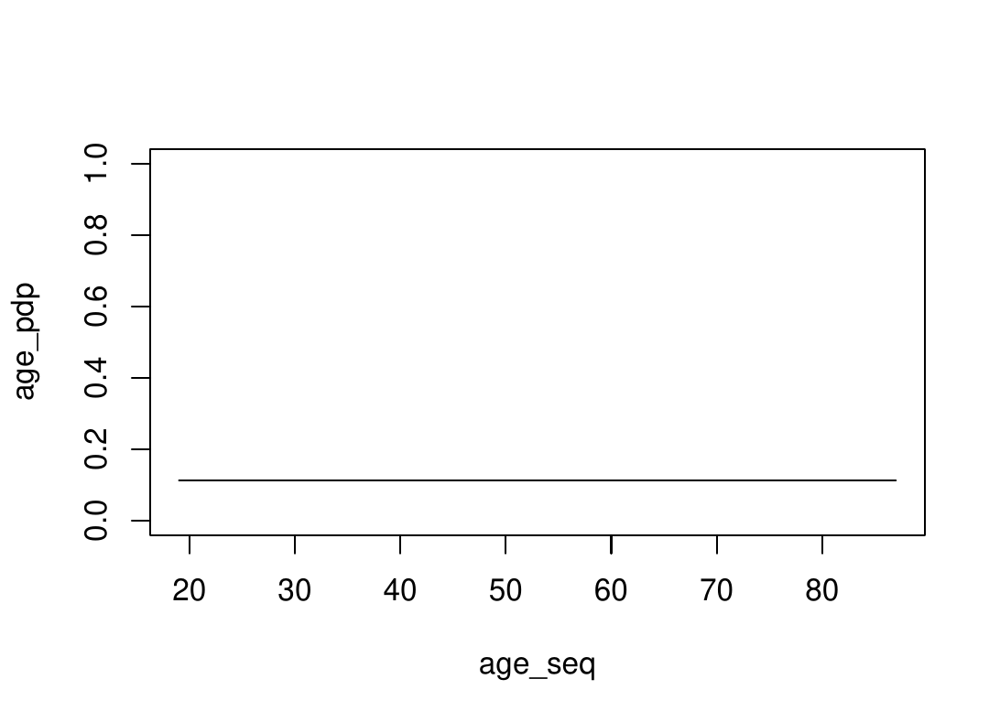
PDP allows to explore the link between response and any feature with the eyes of the model.
PDP can be also used to see the feature importance with the amplitude of the graph (the larger the more important): \[\vert \max_{x_s} F_{X_s}(x_s) - \min F_{X_s}(x_s) \vert.\] It is richer than VI but also longer to run.
PDP can be made multivariate with \(X_s\) being several features (usually, max. 2).
By averaging, PDP ignores any interaction between \(x_S\) and \(x_{-S}\).
LIME
LIME
LIME stands for Local interpretable model-agnostic explanations. The paradigm is that a large ML model can be locally approximated by an interpretable (smaller) model, a surrogate model.
Select a instance of interest.
Build instances close to it and predict them.
Fit a surrogate model.
Interpret it coefficients.
Illustration in 2 dimensions
On iris data, a random forest predicts setosa/virginica/versicolor from length and width (sum of the petal/sepal features). It is globally complex (left graph). Select a point of interest (blue circle). Around it (right plot), a logistic regression could be used. If you fit it on the black dots, you will find a positive association between large width and "being green", and no association with length.
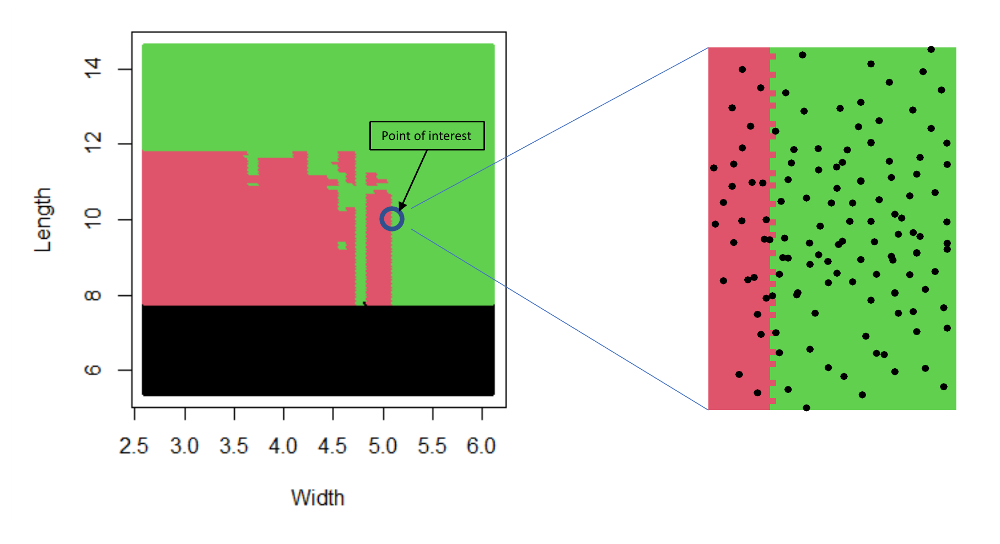
Technical details
There is no unique way to build/interpret surrogate models. Often,
Surrogate models are linear models with variable selection.
The number of variables is fixed by the user.
Categorical features are transformed to a dummy variable: 1 if it is the same as the point of interest, 0 otherwise.
Numerical features are binned and dummy variables are created: 1 if it is the same bin as the point of interest, 0 otherwise.
Weights are assigned to sampled data according to their proximity with the point of interest (Gower’s).
Example
With the bank data (see R code of examples). Three cases: Label 0 with high prob., label 1 with high prob., Label 1 with prob. \(\approx 50\%\).

Interpretation for duration: no local behavior discovered
Around Case 1: Duration being lower than 759 supports a label 0. This means that a low duration supports label 0 and, consequently, a larger duration would support label 1.
Around Case 2: Duration being greater than 759 (lower than 1514) supports label 1. This means that a large duration supports label 1 and, consequently, a lower duration would support label 0.
Around case 3: same as Case 2.
Regarding duration, case 1 and case 2 coincide. They also coincide with the general previous findings that duration is an important factor, with prob. of label 1 increasing with it. The exploration of this two cases did not reveal any local behavior linked to duration. A similar analysis can be done for contact, housing, etc.
Interpretation for campaign: local behavior
Around Case 1: Campaign being low supports label 0.
Around Case 2: Campaign being low contradicts label 1. This is in line with Case 1.
Around Case 3: Campaign being low supports label 1. This is in contradiction with Cases 1 and 2.
This example shows that a global behavior (campaign is positively associated with label 1) can change locally. The fact that Case 3 has a probability around 0.5 makes it interesting. Limitation: here the effect of Campaign is so small that a good explanation is that it has almost no effect everywhere. That was just a toy example.
Discussion
The choice of the point of interest can be anything, even non-observed instances. Average, extreme, and change points are often of interest.
This method interprets locally the link between the features and the response, again, with the eyes of the model.
The surrogate models (as well as the global model) cannot support rigorous causal analysis. We can discover only association here.
Like often, this method can be unstable (implementation, choice of the model, etc.). Try several combinations and be cautious with conclusions.